从一个立方体，
开始使用 Mini3D。
看懂界面，控制视角，编辑对象和网格，再把结果保存下来。每项操作都写明前提、步骤、确认方式和当前限制。
离线阅读：直接用 Edge、Chrome 或 Firefox 打开本 HTML，无需启动服务。转发时请同时保留 images/user-guide/ 图片目录。
01 / BEFORE YOU START版本与功能边界
本手册描述当前仓库里已经实现的二期限定功能，不是 Blender 全功能说明，也不代表全部性能、人工验收和发布门槛通过。当前网格建模已接通组件变换、区域挤出、单面内插、单环切、分域删除和单环共面补面。
| 可以做 | 当前边界 |
|---|---|
| 搭建场景，创建立方体、球体、平面、空对象、相机、方向光 | 对象模式以单对象选择为主；设备从场景树选择。 |
| 3D 游标定位、定点创建、三种枢轴与选择到游标 | 质心 / 活动元素 / 游标；选择到游标保持内部偏移，不提供游标朝向。 |
| 控制观察视角；操作对象位置、角度、缩放和层级 | 项目采用 Y 向上；部分父级非均匀缩放下的世界旋转仍可能受限。 |
| 编辑立方体的点、边、面；挤出、内插、环切、删除与补面 | 仅原生立方体或已有可编辑源网格能进入编辑模式；球体、平面、静态导入模型不能直接进入。 |
| 导入静态 glTF / GLB，调整实例基础外观 | 不是完整 PBR 材质系统；不支持骨骼、动画、形态键等。 |
| Loop/Ring/连通选择、Smooth比例编辑、单段边倒角 | 规则四边网格选择；世界欧氏半径，非测地；倒角限一条外凸流形边及三价端角。 |
| 单轴 Mirror、1–2级 Catmull–Clark、单层集合 | 固定 Mirror → Subdivision 顺序；细分限流形四边网格；集合不改变父子关系。 |
| 保存、重开 .m3dscene；源/求值 OBJ；挤出、内插、倒角 F9 / Repeat | 工程不保存撤销历史、选择会话或 F9 / Repeat 记录；无自动保存 / 崩溃恢复。 |
这是 Blender 风格子集，不是 Blender 全功能。倒角和修改器已有明确限定实现，见第24–26章；布尔、UV编辑、动画、雕刻、节点、最终渲染、多对象同时Edit和 .blend 均不支持。未登记的功能不能通过隐藏快捷键解锁。
02 / FIRST MODEL第一次完成一个模型
目标：给立方体的一面加一段凸起，保存后还能继续编辑。以下按默认 Blender 风格键位操作；“依次按”表示松开前一个键再按下一个，不是同时按住。
- 准备独立场景。“文件 → 新建场景”。若询问旧场景是否保存，先保存需要保留的内容。
- 创建立方体。“创建 → 立方体”。若没有选中，在场景树里点击它；按 Home 把可见对象放入视野。
- 确认键位和焦点。“编辑 → 键位配置 → Blender 风格（G/R/S）”。将鼠标移入中央视口并点击立方体，离开文字输入框。
- 进入编辑模式。按 Tab，再按主键盘 3 切换面选择。首次进入默认全选，先按 Alt+A 清空，再单击一个可见面。
- 核对只选中一个面。按 N 打开侧栏，应显示“面：1 / 6”。这能避免把闭合立方体的全部面拿去挤出。
- 挤出。依次按 E、0.5、Enter。这里 0.5 是沿所选面法线的世界距离。按中键拖动观察，应看到新顶盖和连接原面边界的侧壁。
- 检查和保存。不满意可 Ctrl+Z 撤销；确认效果后按 Ctrl+Shift+S，保存为
我的第一个模型.m3dscene。 - 验证能继续编辑。重新打开该文件，先选中模型，再按 Tab。模型形状保留，但选区和编辑会话需要重新建立。
0.5 → Enter → 保存。若中途不知道当前处于什么状态，先读视口左上角提示。普通变换可以 Esc 取消；不要把未确认的预览直接当作已经保存的几何。操作截图见 编辑选择、挤出 和 确认后的调参效果。
03 / WORKBENCH认识工作台与面板
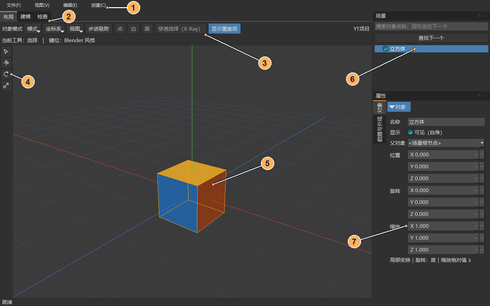
- 1菜单：文件、视图、编辑、创建。
- 2工作区：布局、建模、检查，只改变布局。
- 3视口头部：模式、坐标系、选择和显示选项。
- 4左工具条：选择、移动、旋转、缩放工具。
- 53D 视口：观察、拾取、拖动和模态操作。
- 6场景树：对象、层级、显隐和搜索。
- 7属性区：对象参数，以及“数据与外观”页。
工作区不等于操作模式
点击“建模”只是切换面板布局，不会自动把球体或导入模型变成可编辑网格。左上角写“对象模式”还是“编辑模式”，才决定当前是在操作整个对象还是它的点、边、面。
显示、隐藏与放大区域
- T 显示 / 隐藏左工具条；N 显示 / 隐藏视口侧栏。对象 / 组件信息仍是只读；新增的“3D 游标 · 世界坐标”XYZ 可以编辑，见第 20 章。
- “视图”菜单可重新显示场景、属性和控制台；控制台默认隐藏。
- 默认键位下，鼠标位于视口、场景树、属性区或控制台时，Ctrl+Space 最大化该区域，再按一次还原。
- 如果系统输入法占用了组合键，使用“视图 → 最大化当前区域 / 还原”；也可以在“设置区域最大化快捷键…”里更换组合键。此自定义快捷键只在 Blender 风格下启用。
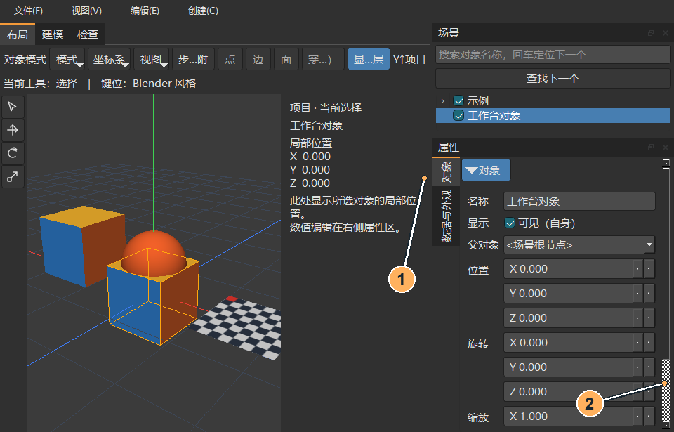
- 1截图当时的 N 侧栏仅展示当前对象或活动组件信息。
- 2属性区可滚动；看不到缩放或设备参数时向下滚动。
05 / OBJECT TRANSFORMS对象移动、旋转与缩放拉伸
前提：处于对象模式，选中一个可操作的对象，且不在相机只读预览中。对象变换改变整体位置、旋转和缩放，不直接改写网格点的位置数据。
方式一：即时 G / R / S
- 在视口中选中对象，确认头部显示“键位：Blender 风格”。
- 按 G 移动、R 旋转或 S 缩放，移动鼠标查看预览。
- 按 X / Y / Z 限定轴；再次按同一轴，在全局和局部空间间切换。初始空间来自头部“坐标系”。
- 输入需要的数值，按 Enter 或在视口内左键确认；Esc 或右键恢复操作前状态。
| 示例（初始坐标系为全局） | 含义 |
|---|---|
G → X → 2 → Enter | 沿世界 X 轴移动 2；不是把 X 坐标设成 2。 |
R → Y → 45 → Enter | 绕世界 Y 轴相对旋转 45°。 |
S → X → 2 → Enter | 按世界 X 方向缩放倍率 2；不是把最终宽度设置成 2。 |
S → Shift+Z → 0.5 → Enter | 在当前方向空间内排除 Z，只对 X/Y 方向应用 0.5 倍率。 |
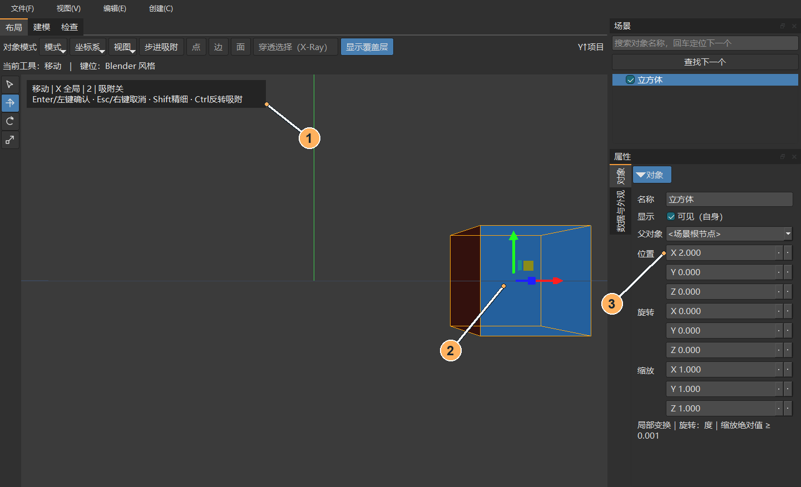
- 1左上提示显示操作、方向、数值和确认 / 取消键。
- 2对象及手柄跟随预览移动。
- 3属性同步显示当前预览位置；不是新的保存记录。
精细移动、吸附和数字输入
- 按住 Shift 精细调整，灵敏度降为通常的 0.1；Ctrl 临时反转当前步进吸附开关。
- 普通变换鼠标步进：移动 0.5、旋转 15°、缩放 0.1。直接输入的精确数字优先，不再被步进四舍五入。
- 支持正负十进制小数和退格修改；不支持
1/2、1e3、2cm等算式、科学计数或单位后缀。 - 无效输入会保留原文字并说明原因，不能确认。可退格修正或 Esc 取消；零 / 过小缩放不允许。数字负倍率可镜像，但缩放手柄不会拖过零。
- Shift + 轴的“排轴平面”只适用于移动和缩放，不适用于旋转。
方式二：左侧手柄工具
点击左工具条的移动、旋转、缩放图标，然后拖动相应轴箭头、圆环或缩放端点。移动有轴与平面控制；旋转拖对应圆环；缩放有单轴端点和中心统一缩放控制。松开鼠标提交一次操作，取消可恢复原值。

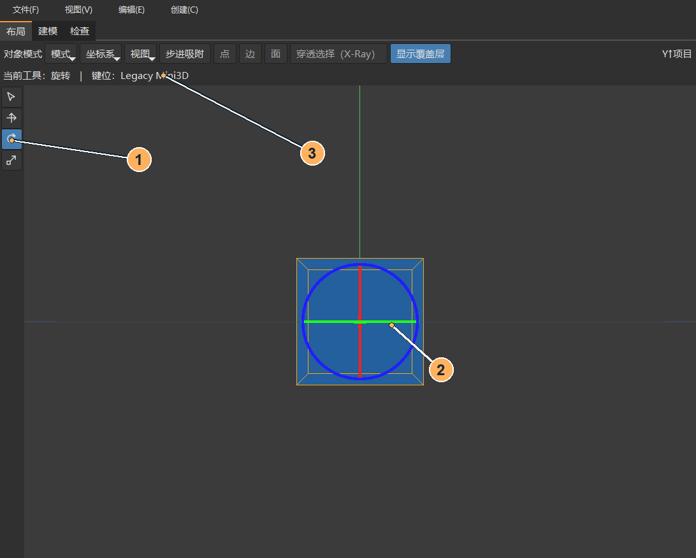

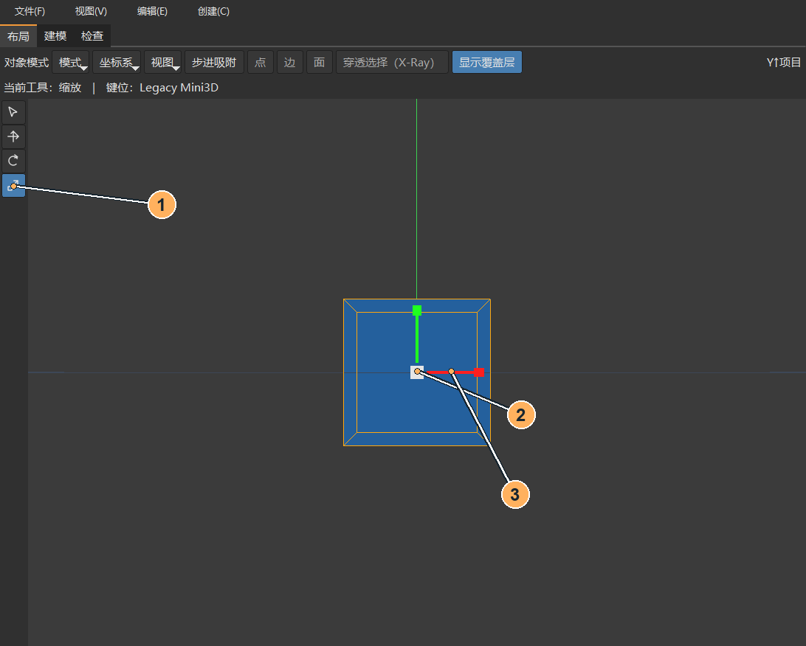
方式三：右侧精确数值
在属性“对象”页编辑位置、旋转、缩放。这里显示的是相对父对象的局部值；旋转单位是度。Enter 提交，Esc 恢复字段，合法值在离开字段时也可提交。按住 Alt，在数字文字上左键横拖可以调整字段；拖动期间是数值草稿，松开后一次提交，不是持续几何预览。
旋转后为什么世界缩放和局部数值不一样？
当前已修复“旋转后某些世界轴拉伸被 TRS 校验一律拒绝”的问题，行为参考 Blender 的对象缩放：保留对象旋转，把世界方向缩放换算为局部 scale。不会为了世界拉伸自动烘焙网格或增加剪切数据。
例如立方体绕 Z 旋转 45°后，世界 X 方向放大 2 倍，局部 X/Y 缩放约为 1.581139 / 1.581139；局部 X 放大 2 倍则是 2 / 1。因此右侧同名轴的数值不一定恰好翻倍。
仍存在的边界：父对象带非均匀缩放时，某些世界旋转会产生当前 TRS 无法表达的剪切，仍可能被拒绝。可切换局部空间，或检查父级变换；不要把所有 TRS 错误都当作同一个已修复问题。
06 / SCENE ORGANIZATION场景树与对象管理
场景树是操作父子层级、容器对象和设备的主要入口。对象模式下，点击树节点会与视口、属性区联动。
- 重命名：右键对象选择重命名，或在属性区修改名称。
- 复制：选中后 Ctrl+D，复制对象及其子树。复制后若重叠，移动副本以便区分；不是 Blender 的 Shift+D。
- 删除：对象模式选中后 Delete，删除对象及其子树。误删可 Ctrl+Z 撤销；编辑模式的 Delete 打开组件删除菜单，见第 19 章。
- 显隐：切换树中勾选或属性“可见（自身）”。隐藏父对象会让后代不再显示，即使后代自身仍勾选可见。
- 改父级：拖到另一个对象上成为其子对象；拖到空白处或右键“移至根层”可回到根层。不支持拖动到行间重新排序。
- 搜索：输入名称，按 Enter 或“查找下一个”循环定位。搜索不是过滤器，不会把其他对象隐藏。
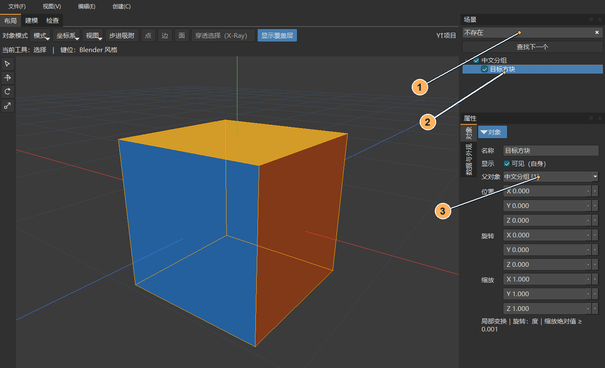
- 1输入名称后逐个定位匹配结果。
- 2树的缩进表示父子关系，勾选框控制自身可见性。
- 3属性“父对象”可核对或修改归属。
改父级保留局部变换，不保证世界位置不变。新父级有移动、旋转或缩放时，子对象可能在画面中跳位置。这是当前语义；需要原位置时先记录数值，或立即撤销，不要把树拖动当作仅整理文件夹。
07 / EDIT MODE & SELECTION编辑模式与点、边、面选择
先满足进入条件
在对象模式选中可见的原生立方体，或已经保存有可编辑源网格的对象。鼠标移入视口按 Tab，也可使用头部“模式 → 进入编辑模式”。首次进入会将立方体转换为 8 点、12 边、6 个四边面的可编辑源，并产生一次转换历史。
球体、平面和静态 glTF / GLB 目前不能直接进入 Edit。点击“建模”工作区不会改变这一限制。退出编辑模式不会自动恢复为未转换的原生体。
| 选择域 | 操作 | 编辑意义 |
|---|---|---|
| 点（顶点） | 主键 1 或头部“点” | 选择构成模型的顶点，适合拉动角点。 |
| 边 | 主键 2 或头部“边” | 选择连接两个顶点的源边，适合调整棱线。 |
| 面 | 主键 3 或头部“面” | 选择完整源面，适合移动面、挤出和内插。 |
单击、增减和全选
普通单击替换选区；Shift + 单击追加或移除组件；A 全选，Alt+A 取消全选。刚进入 Edit 默认全选，想挤出一面时应先清空选区再点面。源面和屏幕绘制的三角形不是同一概念，立方体一面不会因为渲染而拆成两个可选三角面。
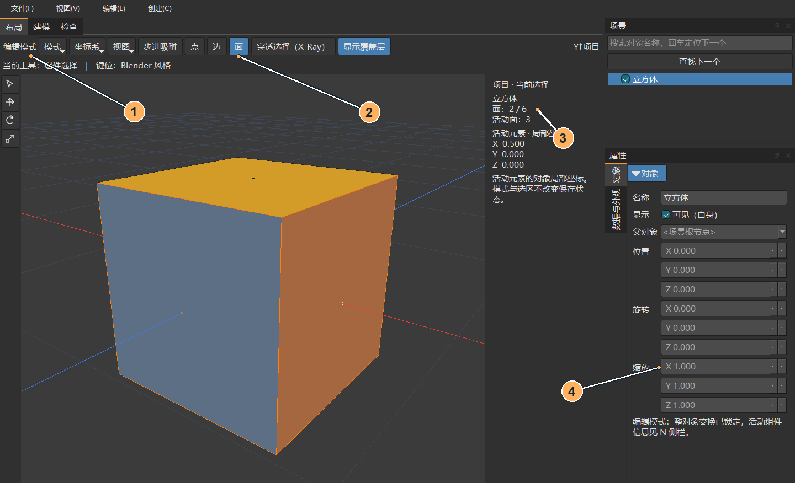
- 1左上明确显示“编辑模式”。
- 2“面”被激活；点、边和穿透选择现在可用。
- 3N 侧栏显示面 2 / 6、活动面和局部坐标。
- 4整对象 TRS 字段锁定；网格编辑使用组件变换。
B 框选与穿透选择
- 选择点 / 边 / 面域，按 B，在视口内左键拖出矩形，松开提交选区。
- 默认替换原选区；配合 Shift 追加，Ctrl 移除。Esc / 右键取消这次框选。
- 点按投影位置判断；边只要线段触碰矩形即命中；面按面中心是否落入矩形判断，擦到面边缘不保证选中。
- Alt+Z 或“穿透选择（X-Ray）”允许选到背后组件。关闭时受可见性 / 遮挡限制。
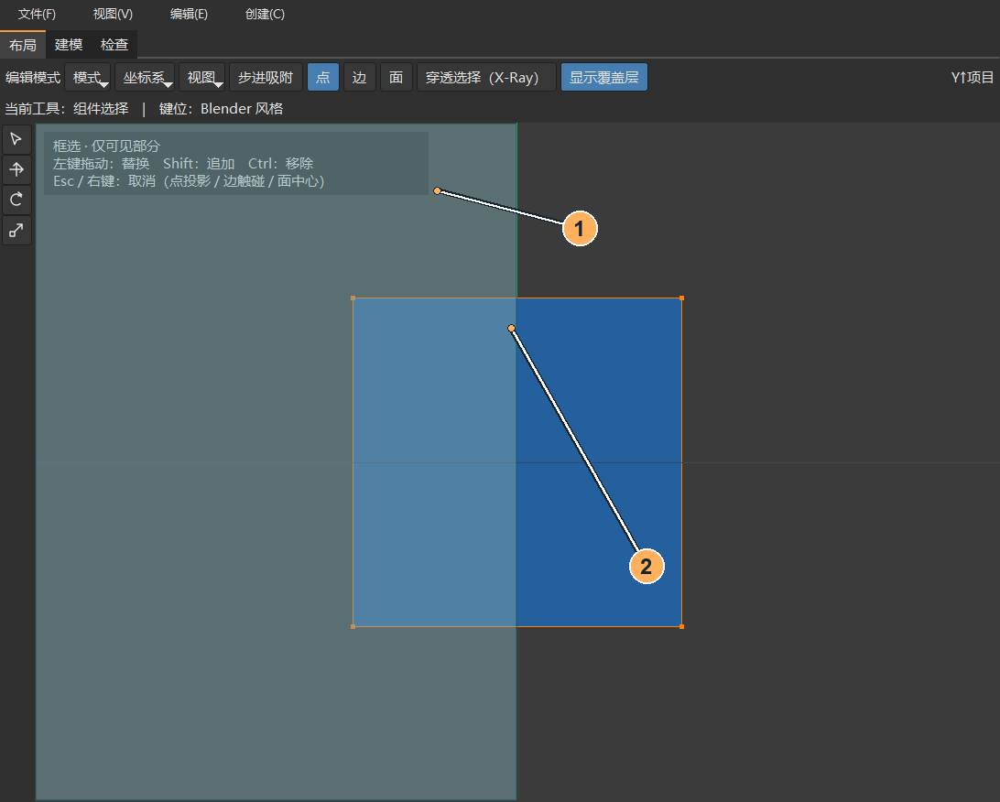
穿透选择不是透明材质。它改变拾取是否受遮挡限制，不会把物体本身变成半透明。单击也不会循环选中所有重叠元素；需要同时选前后组件时，用合适视角配合穿透框选。
Shift+Alt+Z 切换总覆盖层，会隐藏网格辅助线、组件标记、包围盒和手柄，但不会清空选区、退出 Edit 或隐藏操作提示。看不见高亮时，先检查覆盖层开关。
08 / COMPONENT TRANSFORMS移动、旋转、缩放组件
对象模式的缩放是拉伸整个对象；编辑模式的 G/R/S 则改变所选组件关联的顶点，适合只拉长一侧、移动一个角、缩小一块面。
- 进入 Edit，选点 / 边 / 面，建立非空选区。
- 按 G、R 或 S；用 X/Y/Z 约束，或输入精确数值。
- 从视口左上提示核对操作和坐标空间；N 侧栏显示活动元素坐标与“尚未写入文档”的预览说明。
- Enter / 视口左键确认；Esc / 右键取消。确认后对象整体 TRS 不变，但形状改变。
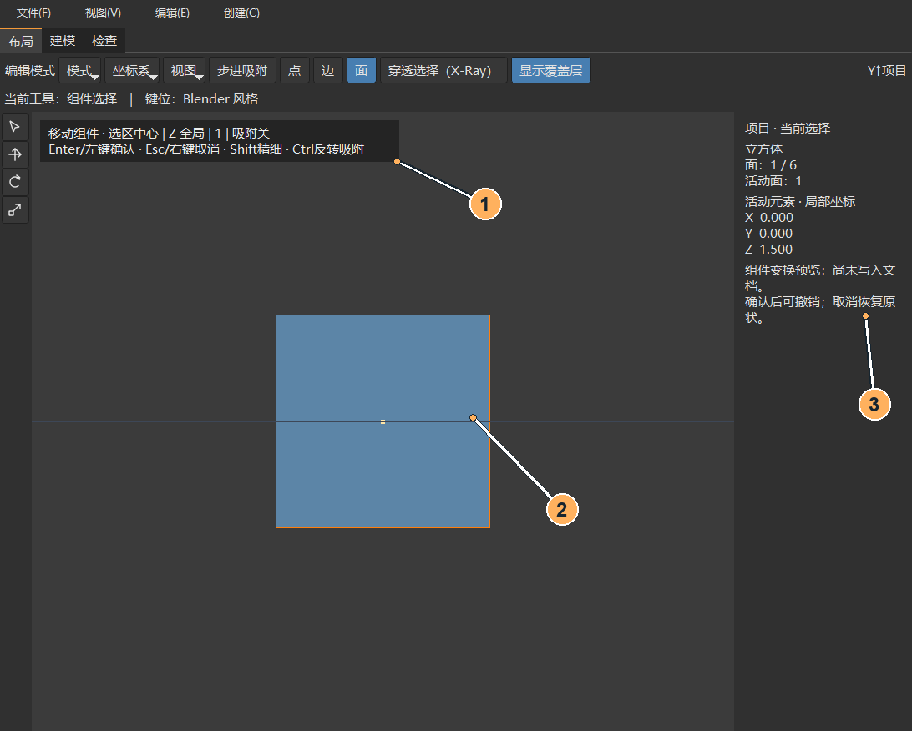
- 1HUD 显示“组件移动”、全局 Z 和输入值 1。
- 2选中面随预览变化，不是整个对象位移。
- 3N 侧栏显示预览状态；取消会恢复原状。
多个面共享的顶点只变换一次。组件旋转和缩放默认以选中顶点的世界坐标质心为中心；只选一个点时，绕它自身旋转 / 缩放不会改变形状。也可在头部切换到活动元素或游标枢轴，见第 21 章。
练习：选立方体一个侧面，沿与该面垂直的轴移动 0.5。应看到该侧被拉长，而属性区对象位置、旋转、缩放仍保持原值。不要先假设垂直轴是 Z，按当前朝向和 Y 向上坐标判断。
09 / EXTRUDE REGION区域挤出 E
挤出会从所选面域生成新顶盖和侧壁，增加真实几何。它与 G 移动面不同：移动面只拉动已有顶点，挤出会增加新的拓扑。
单面操作
- Edit 中切到面域，Alt+A 清空选区，再选一个面。
- 按 E，移动鼠标或直接输入距离，如
0.5。默认沿所选面域的面积加权世界法线方向，也可用 X/Y/Z 改成轴向约束。 - 检查左上“区域挤出”提示和模型预览。数值是世界距离。
- Enter / 视口左键确认；Esc / 右键安全取消，恢复原几何和选区。
- 确认后中键转动视角，检查侧壁；可立即按 F9 调整本次挤出。
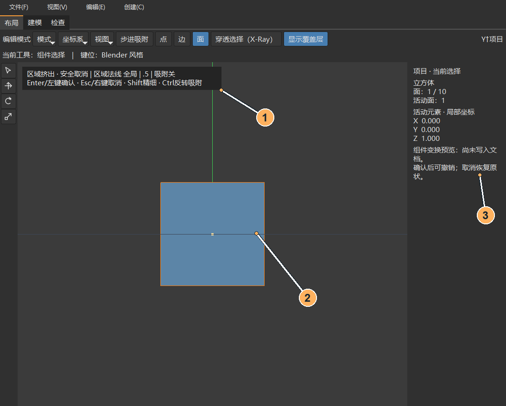
多个面的前提
支持共享边连通、存在合法边界的面域。全选闭合立方体的六个面没有可挤出的边界，会被拒绝；互不相连的面域也不符合当前条件。遇到提示时先检查选中数量和连通性，不必反复按 E。
取消语义和 Blender 常见工作流有差异。本项目 Esc / 右键会彻底取消本次挤出，不留下重叠顶盖。零距离不能确认，不支持用“E 然后右键”留下零位移挤出结果。
10 / INSET FACE单面内插 I
内插是在面内生成一圈边框，保留中央面。当前只支持单个、共面、凸的源面；不是把面简单缩放一下，也不是多面区域内插。
- Edit 面域里清空选区，单击立方体一个面，确保只选中 1 面。
- 按 I，水平移动鼠标，或输入一个较小正数，例如单位立方体可从
0.15开始。 - 观察边框宽度；Enter / 左键确认，Esc / 右键完整取消。
- 确认后新中央面可继续 E 挤出；或者立即 F9 修改此次内插厚度。
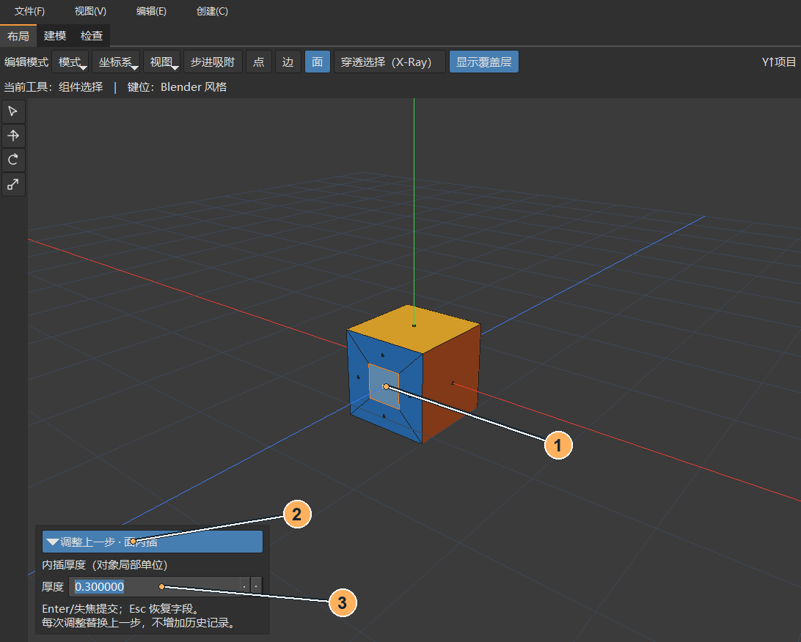
单位不同：内插厚度是对象局部单位，挤出距离是世界单位。对象被缩放后，相同厚度在世界空间的视觉宽度可能不同。
厚度必须大于零并小于边坍缩上限；负值、零、过大值会被拒绝。按退格改小或 Esc 取消。当前不支持外插、多面、凹面；X/Y/Z 轴约束不适用于内插。
11 / LOOP CUT & SLIDE环切与滑移 Ctrl+R
环切会沿规则四边形面带增加一条切线，并可沿被切边滑动位置。可以从点、边、面任意选择域启动，不要求事先选中边，但鼠标需要命中一条源边。
第一阶段：预览面带
- 用一个未做复杂变形的可编辑立方体练习，将鼠标移到可见棱边附近。
- 按 Ctrl+R，移动鼠标到不同源边，可看到候选切线换方向。
- 确认面带正确后，左键或 Enter 进入滑移；此时还没有最终提交。
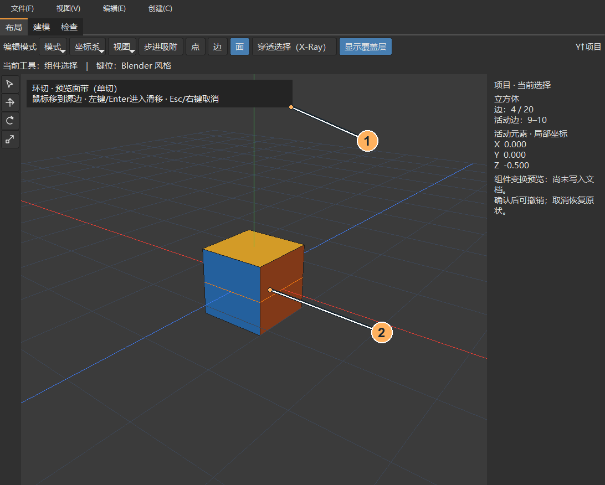
第二阶段：调整位置并确认
- 水平移动鼠标调整滑移比例；也可输入
25，表示 +25%，不输入百分号。 0为中点，正负数表示沿内部一致方向的两侧；正方向不固定等于屏幕右侧。范围严格为-100 < 比例 < 100。- Enter / 左键确认当前比例；右键改为 0 并居中确认；Esc 取消整次环切。

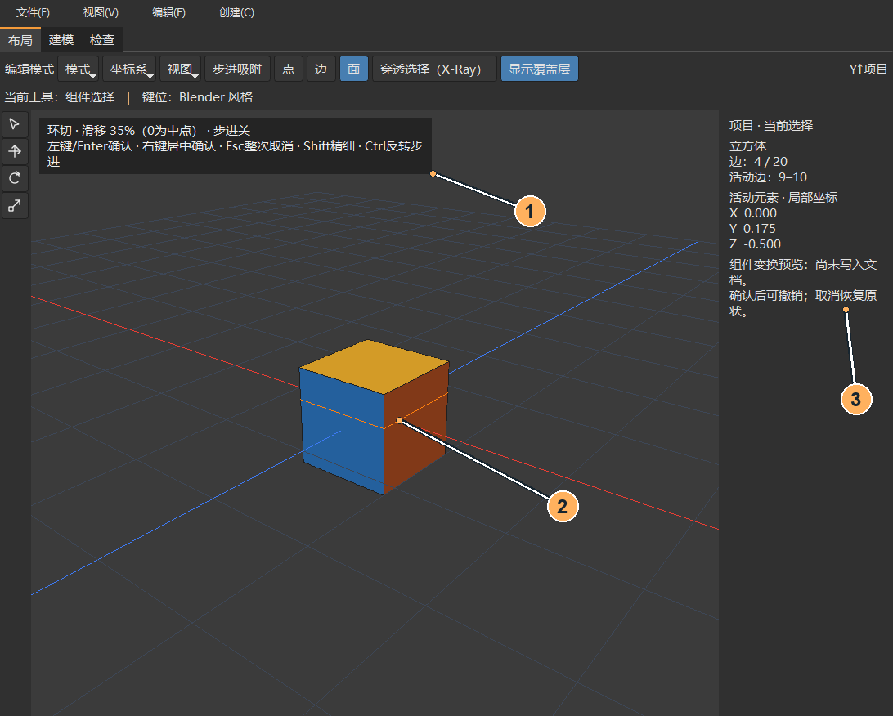

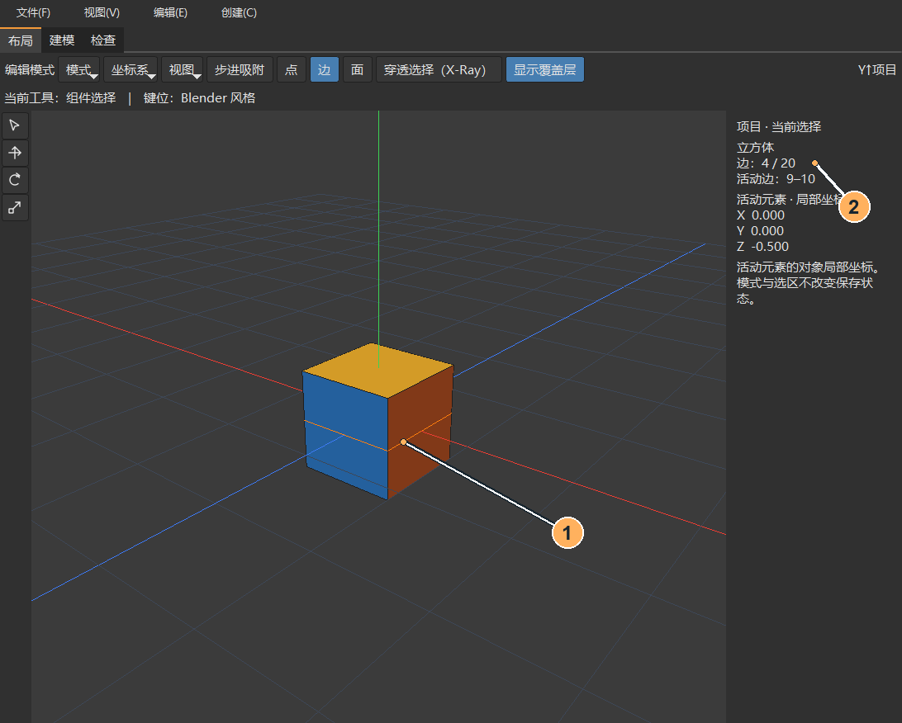
| 按键 | 预览面带阶段 | 滑移阶段 |
|---|---|---|
| 左键 / Enter | 固定面带，进入滑移 | 确认当前比例 |
| 右键 | 取消整次环切 | 以 0% 居中并确认 |
| Esc | 取消整次环切 | 取消整次环切 |
当前仅单切；滚轮不会增加切数。不支持 Even、Flip、多切或环切 F9。面带遇到三角面、非规则分叉、高价极点或不合法边界可能被拒绝；不是任意四边网格都支持。确认后可用组件 G/R/S 继续调整新边，或撤销环切后重新操作。
12 / UNDO & ADJUST LAST撤销、重做与 F9 调参
Ctrl+Z 撤销上一条已提交编辑；Ctrl+Y 或 Ctrl+Shift+Z 恢复被撤销的操作。它们不是“重新运行当前工具”，也不是参数面板。
什么时候能用 F9？
当前仅区域挤出和面内插支持“调整上一步”。需要保持同一个对象的编辑模式，且该操作仍是当前历史末端。按 F9，或点击左下“调整上一步”标题展开，也可用“编辑 → 调整上一步…”。
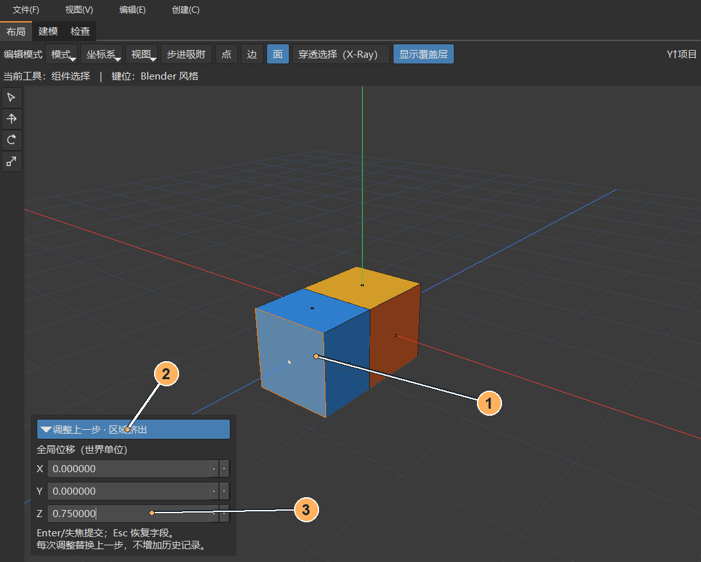
- 先完成一次 E 或 I，并确认。
- 按 F9；挤出面板调整的是世界 X/Y/Z 位移，不是一个“法线距离”字段。内插面板调整的是局部厚度。
- 输入合法值，Enter 或失焦提交；Esc 恢复字段。调整替换原来那一步，不会每改一次就再挤出 / 内插一圈。
- 调整完成后再进行下一步建模。另一次数据编辑会使旧操作不再是末端，面板可能变灰并说明原因。
仅导航或临时改变选区不会立即使最后一步失效；但撤销到别处、切换操作对象、重新打开文档等会影响可用性。文件内不保存 F9 记录，重开工程不能追调上次会话的挤出参数。要创建新的一段，重新按 E；不要把“调整上一步”当作重复挤出。
13 / IMPORT & APPEARANCE模型导入与外观
导入一个静态模型
- 回到对象模式，按 Ctrl+I 或“文件 → 导入 glTF / GLB…”。也可以从资源管理器把模型文件拖入视口。
- 选择
.glb或.gltf。第一次练习可用仓库assets/samples/Box.glb、BoxTextured.glb或Duck.glb。 - 等待导入完成，在场景树展开导入根节点。根节点通常是容器，下方才是真实几何节点。
- 选中几何节点，用聚焦所选对象查看；可在对象模式移动、旋转、缩放，也可复制和管理层级。
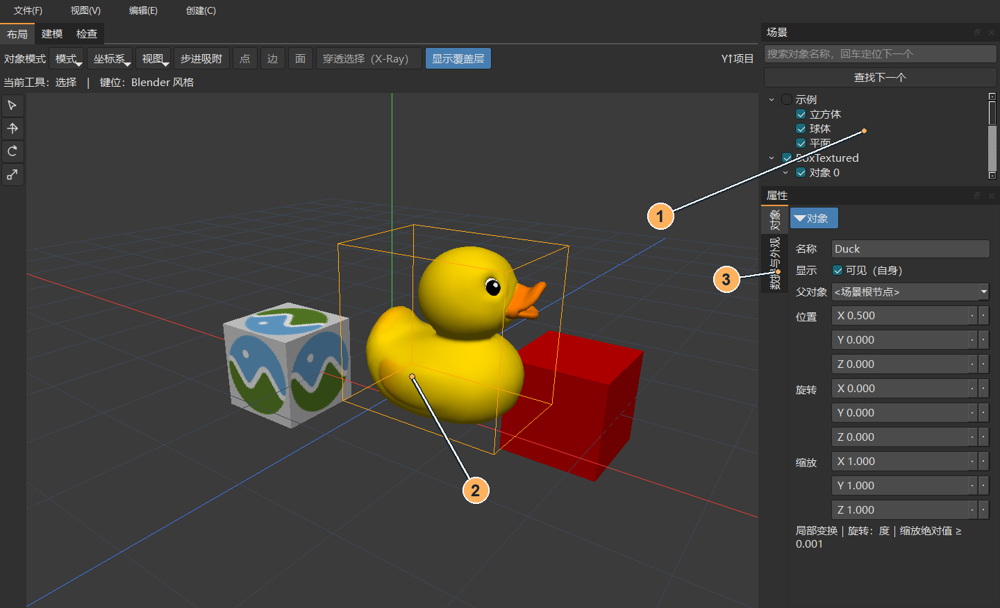
- 1展开导入根节点，找到内部真实几何。
- 2纹理和基础颜色可显示；可以按对象级别变换。
- 3“数据与外观”页是实例外观入口，需选正确节点。
修改外观
选中有真实几何的节点，切右侧“数据与外观”，调整实例叠加色 RGB，以及是否使用纹理 / 顶点色。若字段灰色，先检查是否只选中了容器或设备。这里是基础实例外观控制，不是完整材质节点、贴图绘制或 UV 编辑器。
导入边界和文件关系
- 支持静态三角几何、基础颜色以及 PNG / JPEG 纹理。骨骼、动画、Morph、Draco / Meshopt 压缩、sparse accessor 等不在当前支持范围。
- 不能按完整 PBR、透明混合或所有 glTF 扩展效果预期显示。导入成功只证明支持范围内的数据能进入场景。
- 导入对象可改位置 / 外观，不代表能直接 Tab 编辑源网格。
- 当前为同步导入，大文件可能暂时阻塞界面。没有热重载；外部文件修改后需要重启编辑器再重新导入验证。
- 工程只引用外部模型路径，不会自动把模型、bin 和贴图打包。建议先把资源放入固定工程资源目录，再导入并保存。
14 / CAMERA & LIGHT实体相机与方向光
建立并预览相机
- 先用中键 / 滚轮摆好自由编辑视角。
- “创建 → 相机”，以当前编辑视角建立相机。在场景树选择相机，属性中可改其变换。
- 进入“数据与外观”，向下滚动到“相机（所选对象）”，设置垂直视角、近裁剪、远裁剪；远裁剪应大于近裁剪。
- 点击“预览所选相机”，或默认键位小键盘 0。再按小键盘 0、Esc，或“返回编辑视图”退出。
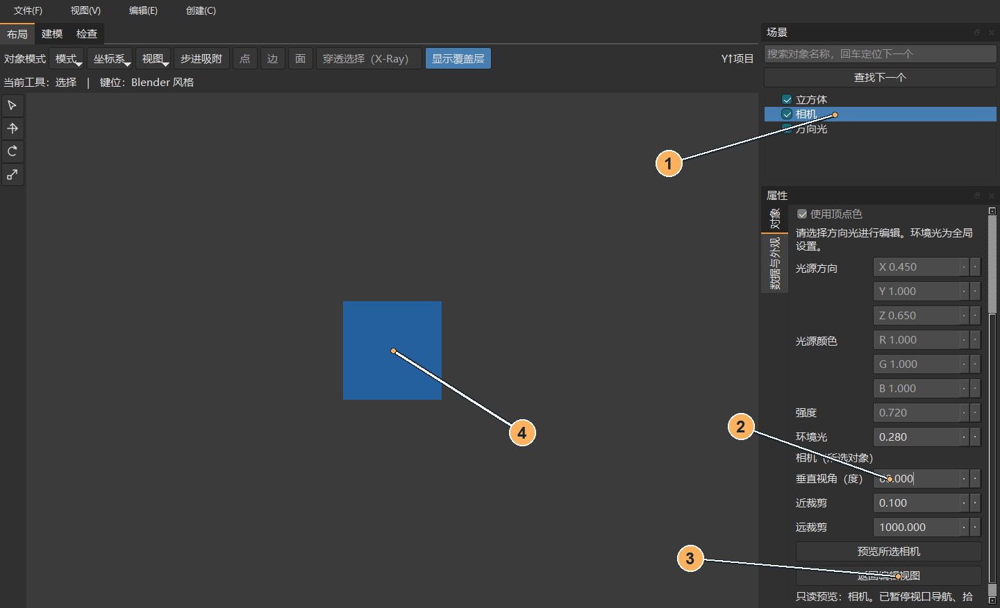
- 1从树中选中相机；方向光也从这里选择。
- 2“数据与外观”下方的相机参数。
- 3预览 / 返回编辑视图按钮。
- 4此时视口只读，中键导航、拾取和手柄操作暂停。
预览中仍可从场景树选择设备并修改属性，但不要期待中键直接改变实体相机。没有可见相机时小键盘 0 会提示创建 / 显示相机；有多台时优先选中相机，其次使用最近预览的可见相机，再回落到最小 ID 的可见相机。
设置方向光
“创建 → 方向光”，在树里选择，调整旋转以改变光照方向；在“数据与外观”修改光源颜色、强度和全局环境光。方向光的位置与缩放不影响照明。
当前不是多灯渲染系统。只使用最小 ID 的可见方向光，不把多盏光叠加。所有方向光隐藏时只有环境光；没有方向光实体时使用兼容的全局光照设置。设备没有可在视口直接点选的网格图标或完整视锥，请使用场景树。
15 / SAVE & REOPEN保存、打开与工程搬移
| 目的 | 入口 | 注意事项 |
|---|---|---|
| 新建场景 | Ctrl+N | 先处理旧场景未保存更改。 |
| 打开场景 | Ctrl+O | 选择 .m3dscene，不是 glTF 导入。 |
| 保存场景 | Ctrl+S | 未命名工程会要求选择路径。 |
| 保留新副本 | Ctrl+Shift+S | 另存到新文件名；适合保留关键建模阶段。 |

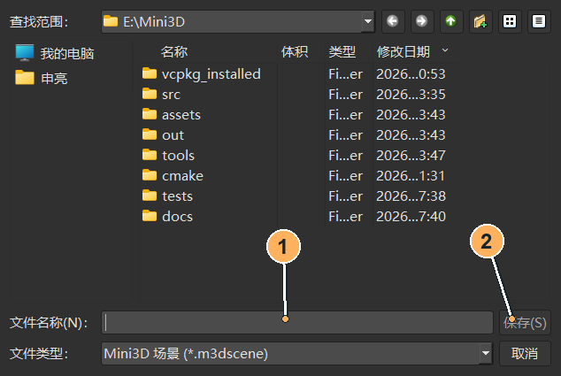

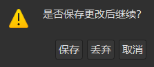
哪些内容会保存？
工程保存对象层级、局部位置 / 旋转 / 缩放、已确认的可编辑网格、Mirror / Subdivision参数、集合及成员归属、对象外观、相机 / 光照、自由编辑视角，以及 3D 游标位置与显示。不保存临时选区、Object/Edit 会话、撤销栈、F9 / Repeat记录、枢轴、临时隐藏、Local View、着色模式或未确认预览；正交与方向预设也不是完整会话持久化。
游标例外：移动或隐藏游标不会出现未保存星号，也不会弹关闭提示。要保留本次游标位置，仍需主动 Ctrl+S；详见第 20 章。
- 窗口标题出现
*表示未保存；保存后检查标题标记和状态提示。 - 先确认操作，再保存。在 G/R/S、E、I、环切过程中触发保存，会先取消未确认预览，再保存已经提交的场景。
- 属性字段的合法草稿会在保存前处理提交；非法字段不会写入几何。遇到校验提示应先修正再保存。
- 重新打开后，网格形状仍在，但要重新选中对象、Tab 进入编辑并建立选区。
格式版本与资源搬移
当前写出格式 3，可读取格式 1 / 2 / 3。旧格式 1 / 2 首次保存会要求另存新路径，保留旧原件；格式 3 不应再交给不支持它的旧候选包覆盖保存。
有外部模型时，把工程和资源放在同盘、稳定的相对目录中。搬移或发给别人时，连同 GLB，或 glTF + bin + 贴图一起复制，并保持相对路径关系。只复制 .m3dscene 不等于完成资产打包。
当前没有自动保存和崩溃恢复。长时间编辑请主动保存，并对重要阶段另存副本。关闭提示里的“丢弃”可能让本次未保存工作无法恢复。
16 / SEARCH & FAVORITES搜索操作与快捷收藏
F3：不记快捷键也能找到操作
- 将鼠标和焦点回到视口或场景树，按 F3，也可用“编辑 → 搜索操作…”。
- 输入中文、英文或当前快捷键，例如“立方体”、
Cube、“挤出”。 - 方向键选结果，Enter 或双击执行，Esc 关闭。结果会显示分类和当前不可执行的原因。
Q：把常用操作收在一起
在 F3 结果上右键“加入快捷收藏”，出现星标；以后按 Q 打开收藏列表。右键可“移出快捷收藏”。初始列表为空，顺序按添加顺序排列。两套键位均支持 F3 / Q，文字框中输入 Q 不会被当作收藏快捷键。

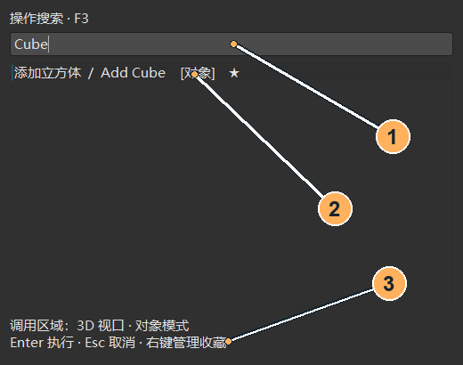

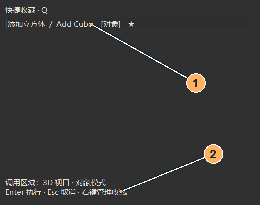
菜单 / F3 / Q 都调用同一批已实现操作，不会通过搜索解锁未完成建模功能。键位配置和收藏属于用户偏好，正常确认关闭后保存；不随 .m3dscene 传给别人，也不产生撤销历史。
17 / KEYBOARD REFERENCE快捷键速查
下表以默认 Blender 风格为主。操作需要合适的模式、选择和调用区域；文本框、数值框、输入法预编辑和对话框优先处理按键。无响应时先退出文字编辑，再把鼠标移回视口。
| 场景 | 按键 | 动作 / 限制 |
|---|---|---|
| 文件（两套键位） | Ctrl+N / Ctrl+O / Ctrl+S / Ctrl+Shift+S | 新建 / 打开 / 保存 / 另存为。 |
| 导入（两套键位） | Ctrl+I | 导入静态 glTF / GLB。 |
| 对象管理（两套键位） | Ctrl+D / Delete | 复制 / 删除整个对象及子树；不是组件操作。 |
| 历史（两套键位） | Ctrl+Z / Ctrl+Y / Ctrl+Shift+Z | 撤销 / 重做 / 重做。 |
| 操作入口（两套键位） | F3 / Q | 搜索操作 / 快捷收藏。 |
| 离线帮助（两套键位） | F1 | 打开本手册与兼容性说明；取消未确认变换，不改变已提交模型。 |
| 着色 / 视图菜单 | Z / 反引号 | 真实着色 / 视图饼菜单；数字键选扇区，Esc取消。 |
| 重复上一步 | Shift+R | 当前选区新执行末端挤出、内插或倒角，新增历史；不是F9。 |
| 拓扑与比例 | Alt+左键 / Ctrl+Alt+左键 / L / O | Loop / Ring / 悬停连通片 / Smooth比例；仅Edit。 |
| 倒角 | Ctrl+B | 仅一条受支持的外凸源边，单段，局部宽度。 |
| 临时可见性 | H / Alt+H / 小键盘 / | 隐藏所选 / 恢复 / Local View；不改原对象visible。 |
| 观察视角 | 中键 / Shift+中键 / 滚轮 | 环绕 / 平移 / 远近；实体相机预览中禁用。 |
| 预设视图 | 小键盘 1 / 3 / 7 / 5 | 前 / 右 / 顶 / 正交与透视。 |
| 框景 / 相机 | 小键盘 . / Home / 小键盘 0 | 聚焦选择 / 聚焦全部可见 / 实体相机预览切换。 |
| 工作台 | T / N / Ctrl+Space | 左工具条 / 选择信息与游标侧栏 / 当前区域最大化与还原。 |
| 3D 游标 | Shift+右键 | 立即定位至表面或 XZ 地面；Legacy 使用菜单/N/F3/Q。 |
| 对象工具 | W | 选择工具；默认键位下不是移动。 |
| 对象与组件变换 | G / R / S | 即时移动 / 旋转 / 缩放；根据 Object / Edit 路由。 |
| 模态方向 | X / Y / Z；同轴再按 | 限定轴；切换全局 / 局部空间。 |
| 模态平面 | Shift+X / Y / Z | 排除该轴；只适用于移动、缩放。 |
| 模式 / 选择域 | Tab；主键 1 / 2 / 3 | 切 Object / Edit；点 / 边 / 面。对象必须可编辑。 |
| 编辑选择 | A / Alt+A / Shift+单击 | 全选 / 清空 / 追加或移除。 |
| 框选 / 显示 | B / Alt+Z / Shift+Alt+Z | 框选 / 穿透选择 / 总覆盖层。 |
| 建模 | E / I / Ctrl+R | 区域挤出 / 单面内插 / 单环切。各有几何前提。 |
| 组件删除 / 补面 | X 或 Delete / F | Edit 中打开分域删除菜单 / 点或边域补一个共面边界环；Legacy F 仍聚焦。 |
| 上一步参数 | F9 | 仅当前历史末端的挤出 / 内插；不支持环切 F9。 |
| 一般确认 / 取消 | Enter、视口左键 / Esc、右键 | 环切右键是例外：滑移阶段右键居中确认。 |
Legacy Mini3D 与默认键位的区别
| 用途 | Blender 风格 | Legacy Mini3D |
|---|---|---|
| W / E / R | W 选择；E 在 Edit 面域挤出；R 即时旋转 | 移动 / 旋转 / 缩放手柄 |
| 前 / 右 / 顶 / 正交 | 小键盘 1 / 3 / 7 / 5 | 主键 1 / 3 / 7 / 5 |
| 聚焦选择 | 小键盘句点 | F |
| 0 | 小键盘 0：实体相机预览 | 主键 0：旧自由观察方向入口，不是实体相机预览 |
| 即时变换与二期编辑工具 | 使用本手册对应快捷键 | 使用头部 / 菜单 / F3 / Q；不要套用默认键位 |
切换入口为“编辑 → 键位配置”。头部会同步显示当前配置，快捷键含义以该配置为准。Legacy 仍能使用已经实现的二期操作，只是需要对应菜单或搜索入口。
18 / TROUBLESHOOTING常见问题与排查
点、边、面、穿透选择全是灰色，为什么？
先看左上角模式。对象模式下这些组件控件正常禁用。选中可见原生立方体或已有可编辑网格，再用 Tab / 模式菜单进入 Edit。若选的是球体、平面、静态导入模型，当前不支持直接转 Edit。
已经切到“建模”，为什么仍不能编辑？
“建模”是工作区布局，不是 Edit 模式。以头部“对象模式 / 编辑模式”的文字为准。参见第 07 章。
按 R 变成缩放，按 W 会移动？
正在使用 Legacy Mini3D。进入“编辑 → 键位配置”切换 Blender 风格；若继续用 Legacy，请从菜单、F3 或 Q 调用即时操作。
按主键 1 / 3 / 7 没切视图？
默认 Blender 风格区分主键盘与小键盘。主键 1/2/3 是组件选择域；用小键盘或视图菜单切观察方向。没有默认开启的小键盘模拟。
旋转过后按世界轴缩放，局部数值为什么两个轴一起变？
世界方向缩放需要换算成对象局部 scale，当前参考 Blender 对象缩放并保留旋转，因此可能同时改变多个局部分量。需要严格沿对象自身某个轴伸缩时，切局部坐标系。父级非均匀缩放下的某些世界旋转仍可能受 TRS 限制。
按 E 没反应，或提示区域没有合法边界？
检查是否 Edit、面域、有选择且为共享边连通区域。刚进入 Edit 默认全选，立方体六面全选是闭合壳，没有边界；Alt+A 后只选一个面重试。不要在 Legacy 下把 E 当挤出快捷键。
I 提示厚度必须大于零或不能内插？
确认只选一个共面凸面，并输入较小的正厚度。0、负厚度、过大值、多个面和凹面均不符合当前条件。内插是局部单位，不是世界距离。
Ctrl+R 没有切线，或右键没取消？
把鼠标放在真实源边附近，不是面中心或渲染三角对角线上；从简单立方体规则面带开始。预览阶段右键取消，滑移阶段右键居中确认；想完整取消始终用 Esc。已确认后可 Ctrl+Z 撤销。
开启穿透却没有透明，背后的点也点不到？
穿透只改变拾取的遮挡规则，不改变材质。重叠点单击不循环遍历；用穿透框选或更换视角。若标记全部消失，检查总覆盖层是否被关闭。
移动一个面后好像没变化？
先检查 N 侧栏数量和 HUD 预览是否启动。沿观察方向移动时正面轮廓可能不变，确认后换斜视角检查。单点旋转 / 缩放绕自身也不会改变形状。
数值侧栏不能改，属性也变灰了？
N 侧栏的对象 / 组件信息只读，3D 游标 XYZ 则可编辑。右侧整对象变换在 Edit 中锁定；用组件 G/R/S 改形状，或 Tab 回对象模式后改整体位置、旋转、缩放。实体相机预览期间也不能修改游标位置。
F9 是灰色，重开工程也不能调整上一步？
当前只支持历史末端挤出 / 内插，且需同对象 Edit。环切不支持 F9，其他数据操作也可能使先前操作失去末端资格。重开工程不会恢复操作历史或 F9 参数。
视角拖不动，或者对象突然看不见？
相机预览中先按小键盘 0 / Esc 返回编辑视图。结束当前模态后再导航；普通编辑视图可 Home 聚焦全部，检查树里对象和父级显隐。空场景或全隐藏时无法聚焦。
模型导入成功，但外观字段不能编辑？
先展开树，选内部真实几何节点而不是导入容器。仅对象级属性可编辑不代表支持网格 Edit。外观与完整 Blender 材质系统不同，不能假设所有 PBR / 透明效果都已支持。
保存后预览变化消失，或发给别人缺模型？
保存会先取消未确认模态，所以应先 Enter 确认再 Ctrl+S。外部模型采用路径引用，要连同模型、bin 和贴图保持相对位置一起搬移；工程文件不是自动资源包。
快捷键无响应，搜索能找到却显示禁用？
退出数值 / 文本输入，把鼠标移回对应区域；检查键位、操作模式、对象类型、选区和相机预览状态。F3 中的禁用原因说明当前前提缺失，收藏也不能绕过这些条件。
仍无法定位时，记录：操作前的模式与键位、对象类型、完整按键顺序、左上提示 / 底部错误原文，以及能复现的工程副本。截图应包含头部模式与提示，避免只有模型局部而看不到状态。
返回手册开头 ↑19 / DELETE & FILL删除组件与补面 X / F
这一组操作适合打开一个洞口，再把洞口补上。与删除整个对象不同，它只修改正在编辑的源网格；所有组件删空后，对象仍保留在场景树中。
先删除一个面
- 创建立方体，进入 Edit，切面域，只选择一个面。
- 把鼠标移回视口，按 X 或 Delete。菜单也可从“编辑 → 组件变换 → 删除组件…”打开。
- 选择“删除面（保留仍被使用的边界）”，Enter 或单击确认；Esc 取消菜单，不修改模型。
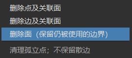
删除范围要看菜单名称。选中面后再选“删除点”，会先取这个面的顶点，再删除这些点的关联面，影响范围会扩大。三种删除都会清理孤立点，不保留散边；不是 Blender 的“仅面”或“溶解”。非法多扇拓扑会整次拒绝。
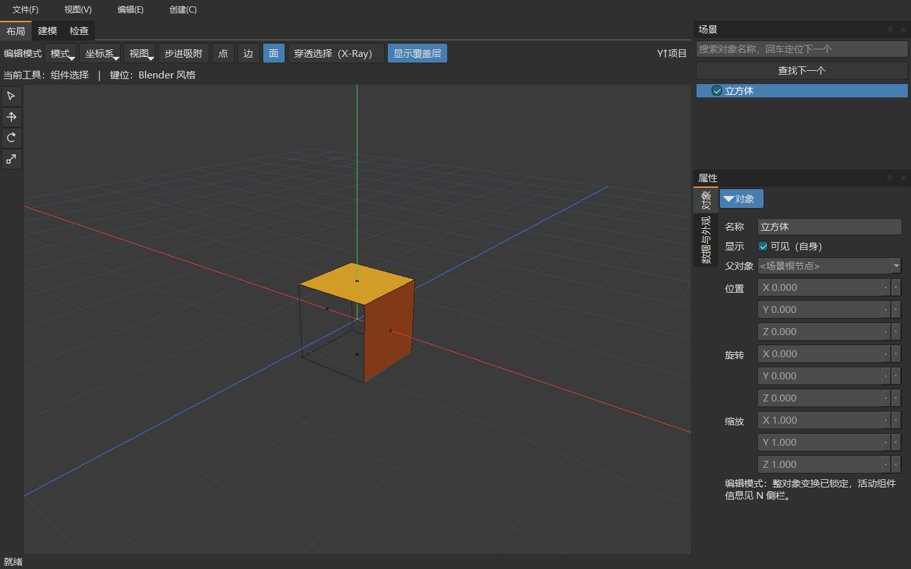
再选择边界补面
- 按主键 2 切边域，完整选择洞口的四条边。可逐边 Shift 单击；用点域时则完整选择四个边界点。
- 按 F，或用“编辑 → 组件变换 → 补面（单个共面边界环）”。成功立即提交，不需要再按 Enter。
- 模式自动切到面域并选中新面。按 Ctrl+Z 撤销补面，可恢复刚才的边/点选区；再撤销可恢复原先被删的面。
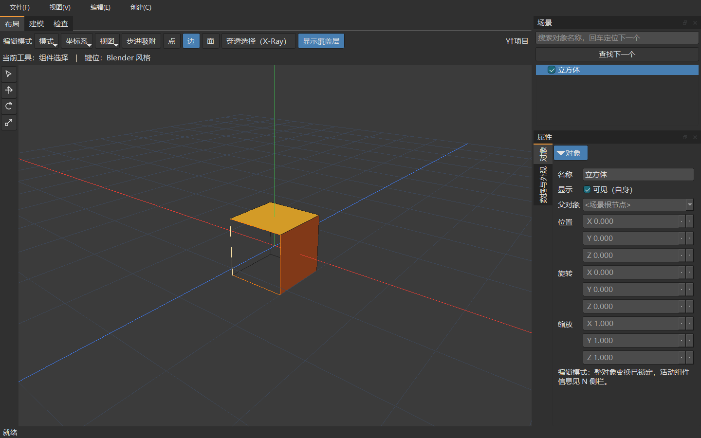
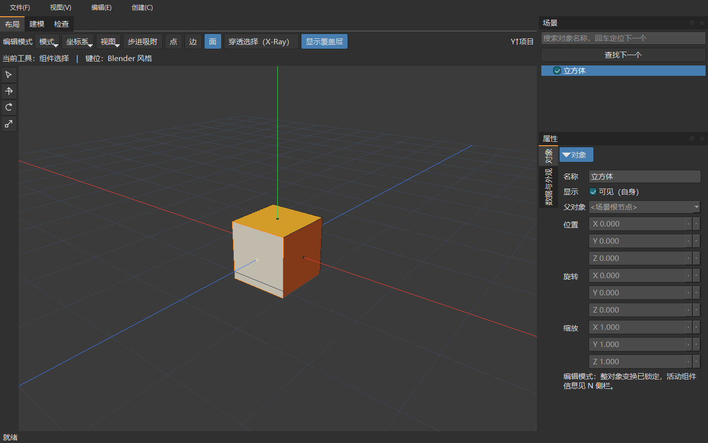
当前限制：只能补一个闭合、共面、无自交的简单边界环，可为凹环。不支持多洞、非共面、散点连面或已有面的重复补面。新面使用对象默认材质和平面 UV，不恢复被删面的原属性；想完整恢复原面请用撤销。
Legacy 的 F 仍是聚焦，补面用菜单 / F3 / Q；Edit 的 Delete 在两套键位下都打开组件菜单，X 仅用于 Blender 风格。删除与补面都不提供 F9；模态变换中的 X 仍是轴约束。
完整语义与验证说明：删除与补面专项说明。
返回手册开头 ↑20 / 3D CURSOR3D 游标与定点创建
红白圆环加十字就是 3D 游标，用来指定一个世界位置。它不是场景树对象，也不是选中点；本轮可以用它确定新基础体的创建位置。
在模型表面或地面放置
- 返回编辑视图，结束正在进行的移动、挤出或环切，把鼠标移入视口。
- 默认 Blender 键位：按住 Shift，单击鼠标右键。命中模型时取最近的可见真实表面；不会改变原有选区。
- 不使用快捷键时，选择“编辑 → 3D 游标 → 点击放置 3D 游标”，再左键点击一次；Esc 或右键取消。这一入口也适用于 Legacy，可由 F3 搜索或加入 Q 收藏。
- 点击空白处会落到 XZ 地面（Y=0）。若正视图下视线平行地面或交点位于视野外，会提示无法定位，原游标位置不变；转动视角、切顶视图或用 N 输入坐标即可。
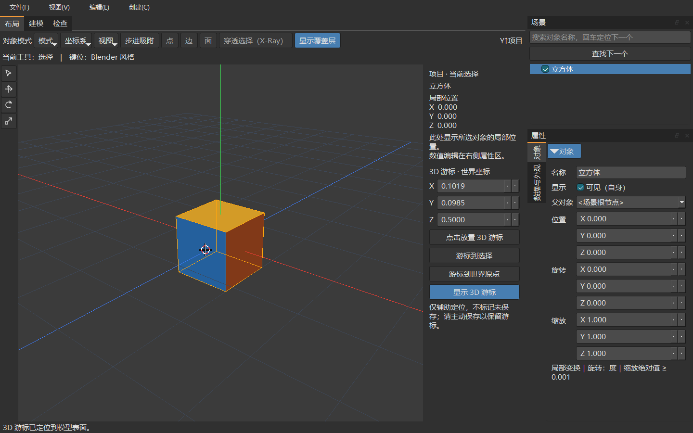
精确输入，再创建物体
- 按 N 打开侧栏，找到“3D 游标 · 世界坐标”。输入 X / Y / Z，Enter 或离开字段提交；Esc 恢复，Alt＋左键横向拖动可微调。
- 例如 X 输入
2.75、Y/Z 保持 0，返回对象模式，再用“创建 → 立方体”。新立方体的中心在 (2.75,0,0)，不再固定在原点。 - “游标到选择”取所选对象的世界原点；在编辑模式则取去重所选顶点的世界平均位置。无选区时不可用。“游标到世界原点”直接恢复 (0,0,0)。
- “显示 3D 游标”只控制显示。总覆盖层关闭、实体相机预览或游标位于视野外时也看不到标记，但不会重置创建位置。
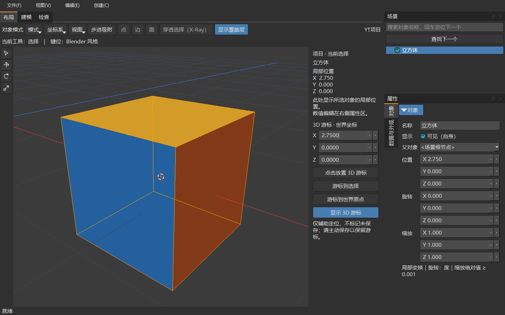
移动游标后，要保留就主动保存。游标位置与显示只随下次 Ctrl+S 写入工程，不标星号、不弹未保存提示。关闭而不保存，会丢失上次保存之后的游标变化。新建场景恢复原点，打开旧文件没有游标字段时也使用原点。
当前边界：支持新立方体、球体、平面和空对象在游标创建；相机仍按当前编辑视角创建，灯光和导入模型行为不变。游标枢轴与“选择到游标（保持偏移）”见第 21 章；尚不支持游标朝向、自定义工作平面或拖动连续放置。图 26–27 保留游标功能初次交付时的界面。
已有模态操作里的右键仍先服务原操作，不能同时放置游标；等待点击放置期间失焦、切视角/文档/选区或开始其他会话，会取消这次等待。
完整规则与验证入口：3D 游标专项说明。
返回手册开头 ↑21 / TRANSFORM PIVOT变换枢轴与选区定位
枢轴决定“围绕哪里转、以哪里为中心缩放”，方向空间决定“沿哪根轴”。视口头部的枢轴·…和全局 / 局部是独立设置，也可从“编辑 → 变换枢轴”选择。
| 枢轴 | 编辑模式 | 对象模式 |
|---|---|---|
| 选择质心（默认） | 选中源顶点去重后的世界平均位置；相邻面共享点不重复计权。 | 当前单对象原点。 |
| 活动元素 | 最后选中的点 / 边中点 / 面顶点均值；移除活动项后稳定回退。 | 当前单对象原点。 |
| 3D 游标 | 使用游标世界位置；隐藏游标也不改变这个位置。 | |
让对象围绕游标旋转或缩放
- 在对象模式选中立方体，将对象位置设为 (1,0,0)，把游标移到世界原点。
- 头部选择“枢轴·3D 游标”，方向选“全局”。输入 R → Z →
90→ Enter，对象原点变为约 (0,1,0)。 - 撤销后输入 S →
2→ Enter，物体变大，原点到游标的距离也加倍。Esc 取消未确认预览。 - 对象模式也可以拖旋转 / 缩放手柄。手柄位于游标，实际对象原点同时围绕它运动；不只是改变手柄的画面位置。
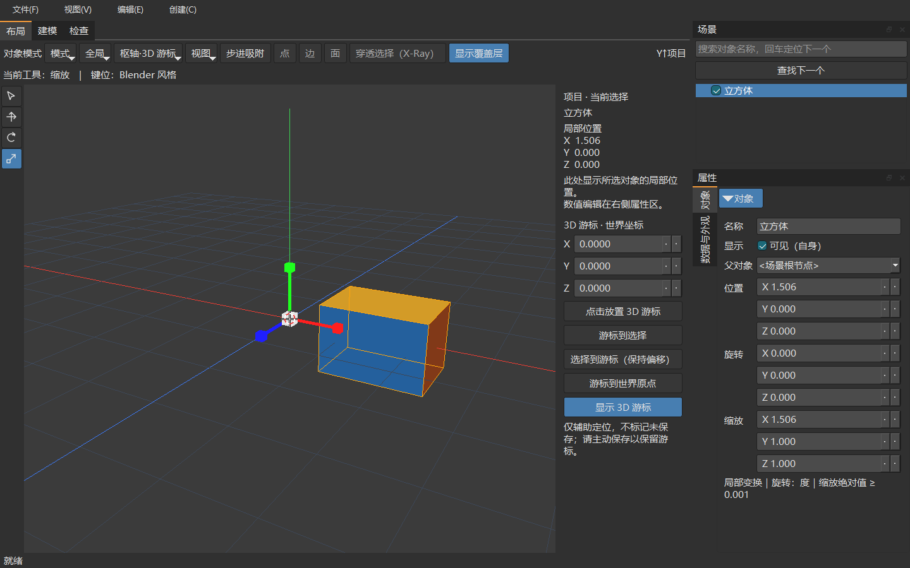
组件用活动元素作中心
- Tab 进入编辑模式，选择点 / 边 / 面；需要多选时用 Shift，最后选中项成为活动元素，N 侧栏可查看其 ID。
- 选择“枢轴·活动元素”，再独立选择全局或局部方向，执行 R/S。只选一个点且绕自身变换时没有几何变化，可以改用游标枢轴。
- 操作开始后枢轴被冻结，不跟随预览的质心漂移；HUD 显示本次实际使用的枢轴和方向空间。
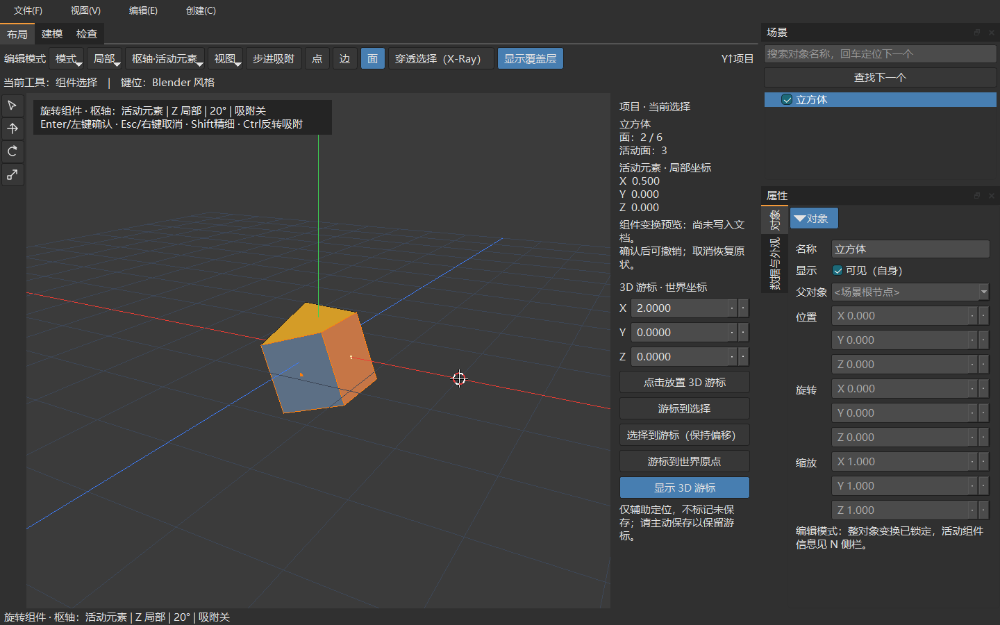
把已有选区移到游标，不改变内部形状
在 N 面板点击“选择到游标（保持偏移）”，或通过“编辑 → 3D 游标”、F3 / Q 执行。对象模式移动对象原点；编辑模式把去重选区质心移到游标，所有选中顶点移动相同的世界距离。此操作不随当前 R/S 枢轴变化，不会把多个顶点压到同一点；确认结果进入一条可撤销历史。
注意方向：“游标到选择”只移动游标，不标脏；“选择到游标”修改对象 / 网格，需要保存。无选区、隐藏目标或相机预览时不可用。变换导致面的投影交叉 / 退化时仍会拒绝，应修正输入或 Esc 取消。
枢轴模式只保留在当前窗口，不入历史、不写工程；新开窗口默认质心。切换枢轴或修改游标位置会取消未确认变换。主键区句点枢轴菜单、多个对象、各自原点和包围盒中心枢轴尚未接入。
对象全局缩放沿用保旋转的 TRS 规则；非均匀父级下无法表示为 TRS 的全局旋转仍拒绝。可使用局部旋转或编辑模式顶点变换，不宣称支持任意对象剪切。
操作与验证边界详见 变换枢轴专项说明。
返回手册开头 ↑22 / SNAP & VISIBILITY吸附、隐藏与局部视图
精确移动到可见顶点
- 在视口头部打开“吸附”，选择“顶点”。选择对象或源组件，按 G 开始移动。
- 将鼠标移到目标顶点附近，10逻辑像素内的可见目标会高亮；没有命中时仍可自由移动。
- 可以先用 X/Y/Z 或 Shift+轴限制移动。键入精确数字后优先采用数字，不会同时跳到顶点。
- 按 Ctrl 临时反转吸附开关，松开恢复；Enter确认一次历史，Esc恢复原态。
步进模式用于固定间距移动。顶点吸附目前仅用于 G；对象手柄仍是步进，R/S/E/I 不提供顶点吸附。移动对象排除自己的子树；组件移动排除源驱动点，比例或细分编辑排除整个被编辑源对象，避免自吸附。
把干扰项暂时藏起来
H隐藏当前对象或所选源元素，Alt+H恢复隐藏项。小键盘 /隔离当前对象子树，再按退出。隐藏不删除网格、不改对象原visible，也不产生撤销历史；临时状态不写工程。
X-Ray不会选择隐藏元素。吸附、游标、聚焦和遮挡使用同一可见性规则。退出Local View不会强制显示原本隐藏的对象；恢复全部临时隐藏也不会改掉属性区的持久“可见”设置。
专项边界：吸附、隐藏与Local View。
23 / SELECTION & PROPORTIONAL拓扑选择与比例编辑
| 想做什么 | 操作 | 边界 |
|---|---|---|
| 沿源边连续选择 | 边模式 Alt+左键 | Loop在规则四边邻接中延伸，高价极点停止。 |
| 选择对边组成的环 | 边模式 Ctrl+Alt+左键 | Ring穿过规则四边面，不选择三角化对角线。 |
| 选择相连的一片 | 鼠标悬停组件，按 L | 按源边连通；空白悬停不跳到旧活动项。 |
菜单/F3也有相同入口。默认替换选区；鼠标组合选择仍遵守隐藏规则，不修改几何或撤销历史。
让邻近顶点平滑跟随
- 选择一个点或一组源组件，按 O打开比例编辑，默认“仅连通”。
- 执行 G/R/S。视口半径圈表示影响范围；滚轮改变世界单位半径，此时不会缩放相机。
- 选中驱动点完整变换，邻近点按Smooth衰减。仅连通关闭后，可影响同一个对象中的其他连通片，不影响其他对象。
- Enter确认一条历史，Esc恢复全部受影响位置和属性；改变半径始终从启动前快照重算，不累加上一帧。
这是世界欧氏距离，不是沿表面的测地距离。只提供Smooth，不支持全部Blender衰减类型；比例编辑仅用于普通组件GRS，不用于挤出、内插、环切或对象变换。
24 / SINGLE EDGE BEVEL单段边倒角 Ctrl+B
- Tab进入Edit，按2切到边选择，只选一条外凸流形源边，例如原生Cube的一条边。
- 按 Ctrl+B，移动鼠标或输入一个较小的正宽度。宽度为对象局部单位；对象非均匀缩放后不保证世界等宽。
- 观察新斜面及两端闭合面，Enter确认，Esc/右键恢复完整before。
- 确认后用F9调整该命令的宽度，不再增加一次倒角；Undo恢复原边，Redo回放结果。
只支持单边、单段、外凸流形边和三价端角。多边同时倒角、多段轮廓、凹边、边界或高价端角会拒绝。端面为五边形，不能直接接启用的“四边网格细分”；先停用细分，或选择另一工作流程，程序不会自动改掉修改器。
默认新面被选中。要Shift+R再倒角，先选另一条受支持的源边；不要把新面选区当作边选区。隐藏倒角结果后F9也不可用，先Alt+H恢复。详见 倒角说明。
25 / MIRROR镜像与中心夹持
- 选中可编辑对象，在右侧“修改器”页点击添加Mirror，或用“编辑 → Mirror”/F3。选择对象局部X、Y或Z单轴。
- 结果绕对象原点的该轴零平面反射。Object全局位置不是镜像平面；源笼仍是唯一可编辑几何。
- 半模型中心开口可开启Merge，设置局部阈值；只合并中心对应边界，不是全网格按坐标焊接。
- Clipping用于变换会话：中心边界点被捕获后不能穿过中心。它不是Merge的别名，不能保证任意输入自动变成对称半模型。
- 开关、参数、删除或应用均可Undo；“应用Mirror”将当前镜像结果烘焙为可编辑源，保留后续细分参数。
新添加到完整Cube会反射完整Cube，不会自动切出一半；Bisect未实现。若需要中心缝合，应先制作合适的中心开口半模型。镜像生成的点/面只读，不可当作新的可写源ID选择。
阈值或输入不合法时不替换源和结果。只支持一个局部轴，不支持外部镜像对象、三轴组合或任意修改器排序。详见 Mirror说明。
26 / CATMULL–CLARK细分与源笼
- 选中可编辑的流形四边网格，例如原生Cube，在“修改器”页添加细分。
- 选择1级或2级，实体显示变圆的求值表面，Edit仍显示和操作原始源笼。Cube源仍为8点6面，一级结果为26点24面，二级为98点96面。
- 可以停用预览或删除细分；每个真实参数提交只增加一条历史。
- “应用细分及前置Mirror”烘焙当前显示的完整求值链，并移除两修改器；Undo恢复源、参数和选区。
限流形四边面、定义边界和1–2级；不支持三角面、五边面、折痕或任意排序。唯一组合顺序为Mirror → Subdivision。停用细分时，“应用”仍以当前显示链为准，不会暗中强行启用它。
格式3保存源和选项，不保存派生缓存。隐藏源面会通过来源映射隐藏结果；OBJ“修改器结果”输出最终求值网格。详见 细分说明。
27 / COLLECTIONS集合组织与显隐
- 右上大纲下方“集合”点击新建，输入名称；也可“编辑 → 新建集合…”/F3。
- 选中集合行，再选一个对象并点“移入”。每个对象只属于一个集合，移动归属不改变父节点或位置。
- 点击集合内成员选中真实对象；双击集合名重命名，复选框控制集合成员显示。
- “移出”只解除归属；“删除”只删除集合，对象仍然保留。Undo能恢复组织状态。
集合显隐与对象自身及祖先visible相交。重新显示集合不会强制显示原先隐藏的对象；复制对象保留归属，删除/Undo同步成员引用。集合和成员会保存到工程。
集合不是父对象，不能用集合行同时变换多个对象。无嵌套、跨集合多链接或多对象同时Edit。详见 集合管理。
28 / SHADING, PIE & REPEAT着色、饼菜单与重复
鼠标在视口时，Z打开着色饼菜单，反引号打开视图饼菜单。点击环形扇区或按条目前的数字执行；Esc、中心或外部取消。条目沿用菜单/F3的同一操作，禁用时显示原因，不绕过上下文限制。

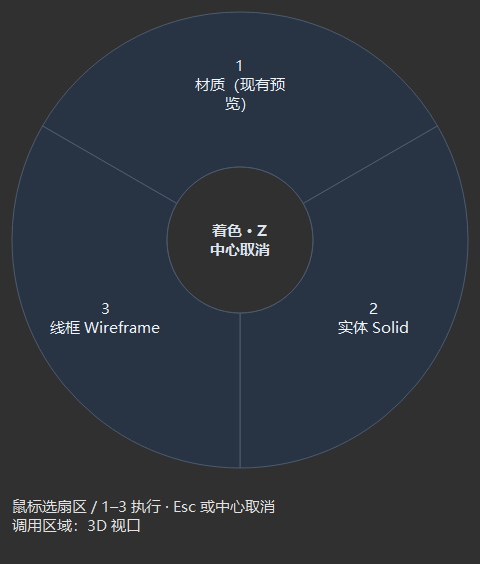

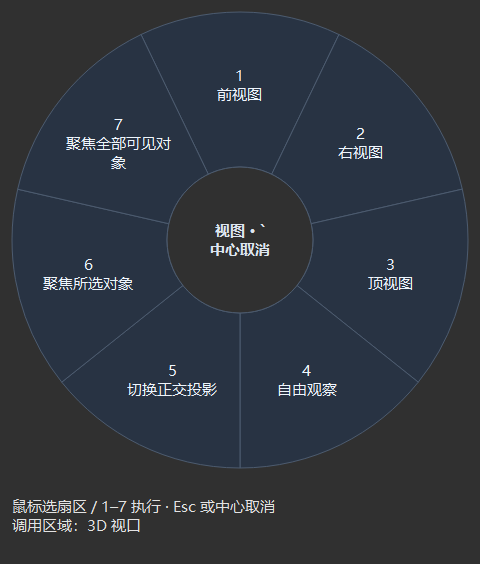
| 模式 | 效果 | 不代表什么 |
|---|---|---|
| 材质 | 原有基础光照、颜色和纹理。 | 不是完整PBR或最终渲染。 |
| 实体Solid | 中性色，不显示纹理或逐顶点色。 | 不改对象保存的材质。 |
| 线框Wireframe | 真实GPU三角网格线框。 | 含三角化对角线，不等于可选源边或X-Ray。 |
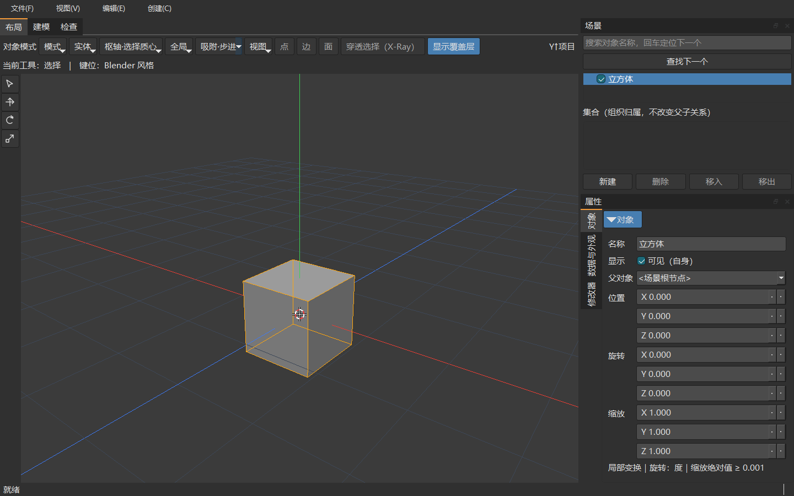

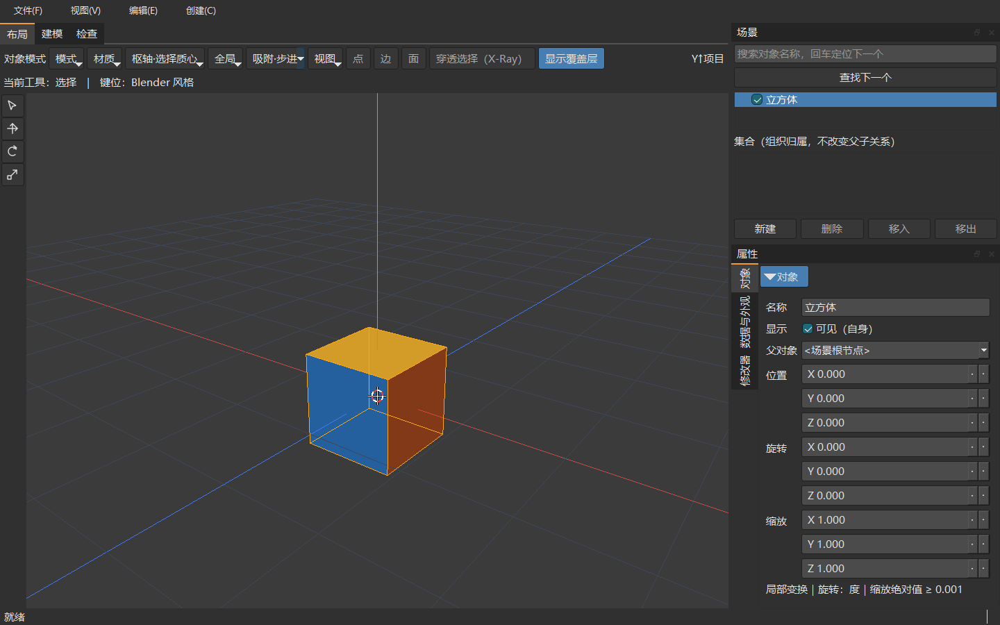

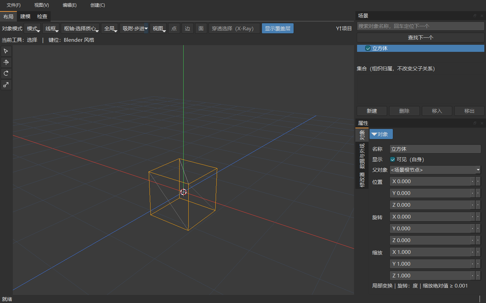
Shift+R不是F9，也不是Redo
例如内插确认后，Shift+R使用上一次最新厚度，在当前对象和选区上再内插一圈，增加一条历史；F9只改变原来那一圈，替换原命令after。Ctrl+Y则只回放被Undo的命令。
Repeat目前仅支持历史末端的挤出、内插、单边倒角，可换到另一已可编辑对象或新选区。新输入不适用/参数超限时整次拒绝，不破坏旧结果。其他命令位于末端时没有配方，不会越过历史猜参数。重开工程没有Repeat记录。
详见 饼菜单与Repeat。
29 / OBJ EXPORT导出源或求值 OBJ
- 选中一个几何对象，打开“文件 → 导出所选为OBJ”。
- 明确选择“可编辑源”或“修改器结果”。源保留真实多边形，结果包含当前Mirror/细分链。
- 选择新路径并确认。输出烘焙世界变换，仍是Y-up和项目单位；负缩放修正绕序，法线按逆转置转换。
只导出当前所选几何，不是场景/集合批量输出；静态导入保持三角形。当前不写MTL、贴图或材质，不输出相机/灯。导出不改变历史、保存点或工程路径，写入失败不损坏现有目标文件。
外部软件导入时按Y-up检查，不能假定Mini3D已经迁移为Blender原生Z-up。外部Blender数值复核与程序内文件数值测试是两份证据，不能相互冒充。
详见 OBJ导出与数值规则。
30 / COMPATIBILITY & PERFORMANCE兼容边界与性能说明
- 固定参考Blender 4.5操作子集，项目仍右手Y-up、XZ地面。工作区、工具、Object/Edit是三种状态。
- 仅单对象Edit；原生Cube和已有可编辑源支持编辑。静态glTF/球体/平面不能直接编辑，也不从三角形猜原四边拓扑。
- 挤出Esc/右键恢复完整before，环切Slide右键居中确认、Esc整次取消；不保留零距离重叠面。
- 四边细分与倒角五边端面不兼容；修改器仅固定链。拓扑校验不等于全局自相交检测。
- 没有动画、雕刻、节点、布尔、UV编辑、Rendered、任意分屏、多对象Edit或 .blend。不提供假菜单。
- 格式3读取1/2/3，旧格式首次升级必须另存；完整源/修改器/集合保存，Undo、F9、Repeat和视口临时状态不保存。
性能不是一个通用“FPS”数字
源顶点数与渲染拆点、派生三角数不同。性能工具分别测1万/5万/10万源顶点的查询、选区更新、预览计算、实际出帧反馈与进程峰值内存；不能用旧静态球体报告证明可编辑网格流畅。
2026-10-03当前源码Release性能收尾：1万/5万/10万规则网格的Visible/X-Ray选择、begin/preview API P95均≤50ms，实际换帧P95均≤100ms；10万点预览API/换帧为36.73/52.88ms，可见框选45.55ms，完整样本和正确性均通过。旧超预算报告保留，旧候选ZIP尚未包含新性能代码。基础编辑仍建议每对象不超过1万源点，更大网格的“编辑可能延迟”提示保留，不改几何或历史。完整样本、峰值内存与限制见 二期性能报告；复杂拓扑、比例编辑、修改器、大范围变形与其他硬件不在该夹具的保证范围内。
本机验收与原生作品
性能收尾构建已通过新Release四组完整回归；既有Debug/DPI/截图/ZIP保留收尾前来源，不冒称随新构建重验。自动配方、截图和真实数值比较见 二期验收证据；真实中文输入法、混合DPI跨屏、全新机器与完整人工耐久仍需实测，不能用合成输入替代。
在“文件 → 打开场景”打开 assets/scenes/v2/shell.m3dscene、symmetric.m3dscene 或 subdivision.m3dscene，先另存副本再继续编辑。三件作品分别展示外壳、Mirror对称和固定链二级细分；半壳由原生Cube夹具生成，不是未实现的Bisect入口。作品来源见 样例说明。
本机Blender5.1.1已实际导入五个OBJ并重建Mirror/有限级Catmull–Clark，点位、面环和绕序通过数值比较；这不证明UV、材质、默认极限曲面或全部操作等价，也不冒充固定参考Blender4.5.0的实机验收。
从程序打开帮助
按F1或“帮助 → 使用手册与兼容性说明”。离线使用无需登录或网络；候选包中保留docs及images相对目录。手册按当前源码编写，旧V1包和视频保持历史状态。真实IME、跨屏和外部软件复核没有完成时会明确标未验证，不以合成事件冒充。